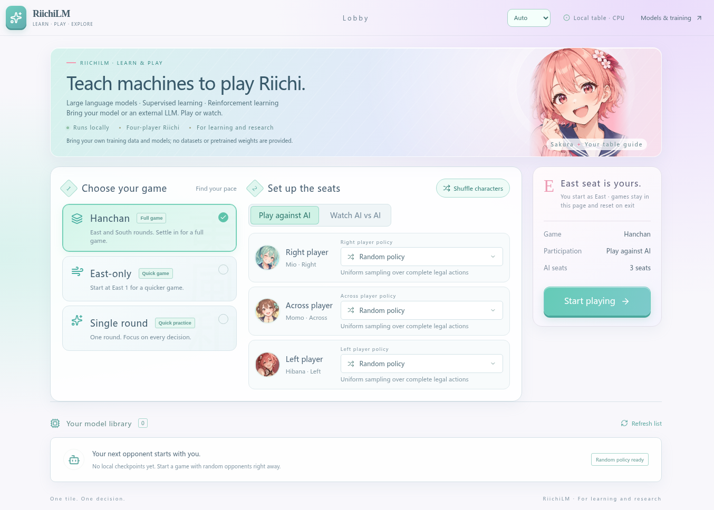
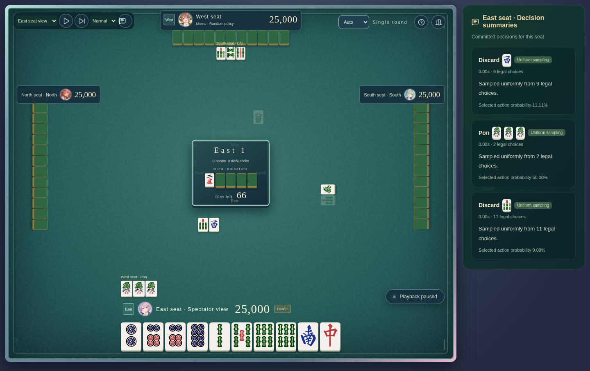

牌
01 / 03从自备数据中学习
使用自备的兼容处理后语料，以合法动作预测为起点，学习麻将中的决策。
从一张牌开始，探索智能的无限可能。RiichiLM 是开源的四人立直麻将 AI 研究项目，连接语言模型、对局与强化学习。
麻将充满不确定性，也充满值得探索的决策。我们试着让 AI 在规则与变化之间，找到属于自己的下一步。
使用自备的兼容处理后语料，以合法动作预测为起点，学习麻将中的决策。
结合规则环境、对手池与 PPO 强化学习，探索从模仿到自主策略的道路。
通过本地浏览器牌桌对战或观战，体验不同 AI 玩家之间的互动。
我们把复杂的麻将世界拆解成可研究的步骤：理解对局、预测行动，再通过交互持续探索。
从训练到对局，最新代码让实验更容易展开。
默认策略模型参数量，支持 8,192 token 上下文。
单卡有界训练样本的峰值已分配 / 保留显存；实际占用随输入和配置变化。
本地牌桌支持加载兼容的自定义权重，也可使用无界面对战评估。
显存数据来自 RX 7900 XTX 上的有界 BF16 测量，不代表最低硬件要求，也不代表模型棋力。详见 GitHub 的测量条件。
查看测量详情 ↗真人对战或四 AI 观战，自由组合自定义权重、外接 LLM 与随机玩家。


截图来自项目公开仓库，使用随机对手，不代表已训练模型的棋力。本地牌桌支持中文、英文和日文；退出或刷新后会话重新开始。
研究是一场漫长的对局。我们期待与更多同样好奇的人，一起探索下一步。
项目包含监督训练、推理、自我对局、PPO 更新、断点恢复与本地浏览器对局。已有有界 CPU 与 AMD BF16 检查；竞技棋力和长期训练效果仍待验证。
代码已在 GitHub 以 Apache-2.0 协议开源。预训练权重即将开源，目前尚未发布；训练数据与评测集不随仓库提供，训练需自备兼容数据。
查看源码、安装指南与贡献方式，从随机对手开始你的第一局。
前往 GitHub ↗